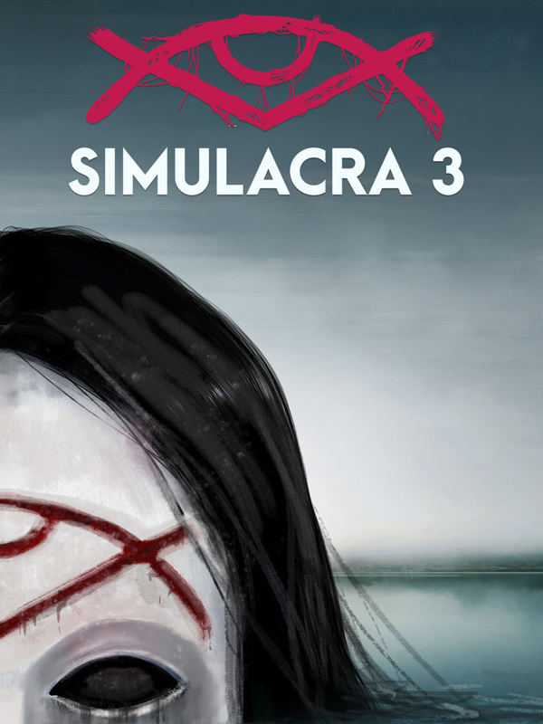

SIMULACRA 3
SIMULACRA 3
Details
|  | |
| Playtime | Not Played |
| Last Activity | Never |
| Added | 2025-12-19 0:09:53 |
| Modified | 2025-12-19 0:10:15 |
| Completion Status | Not Played |
| Library | Steam |
| Source | Steam |
| Platform | PC (Windows) |
| Release Date | 2022-10-25 |
| Community Score | |
| Critic Score | |
| User Score | |
| Genre | Adventure Indie Puzzle Role-playing (RPG) Simulator |
| Developer | Kaigan Games |
| Publisher | Neon Doctrine |
| Feature | Single Player |
| Links | Steam Official Website App Store (iPhone) App Store (iPad) Twitch YouTube Discord Epic GOG |
| Tag | Adventure Atmospheric Automobile Sim Choices Matter Controller Detective FMV Hacking Heist Horror Immersive Sim Indie Interactive Fiction Investigation Multiple Endings Psychological Horror Puzzle Simulation Singleplayer Story Rich |
Description

Evil welcomes you back in the third chapter of the critically acclaimed horror series, Simulacra.

The once charming town of Stonecreek has seen better days. People are vanishing into thin air, leaving nothing behind but strange symbols where they were last seen. With the police baffled and the populace terrified, rumors swirl that it is the doing of the Beldam, the ghost of a witch that once haunted the streets of Stonecreek.
You are the intern at the local paper, tasked with assisting the town’s star journalist, Ruby Myers, on her investigation into the disappearances. Your only lead is the phone of the missing Paul Castillo, a software developer, an amateur historian of the town, and one of Ruby’s sources. While Ruby does the legwork, your job is to hack into Paul’s phone for any clues left behind. New apps, exciting features, and fresh terror await those who delve into the darkest corners of the digital realms as you investigate the Beldam of Stonecreek.